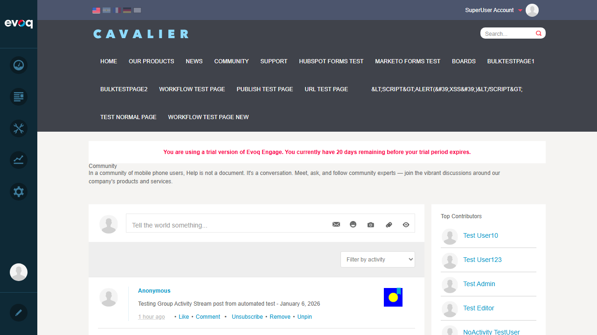
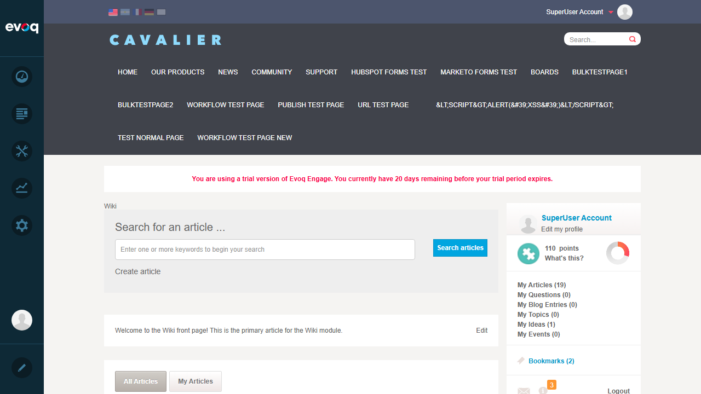
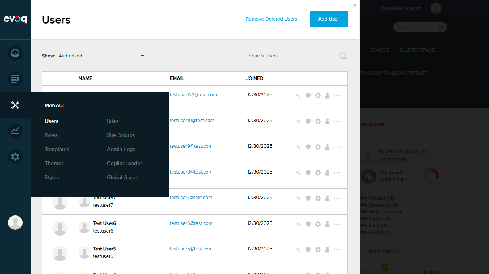

Test 1: Verify Social Modules Installed and Available
Status: PASS
What Was Tested
Verified that all social modules from the KnownSocialModules list are installed and available in the Extensions panel.
Steps Taken
- Logged into DNN as SuperUser (host/Pass123456)
- Navigated to PersonaBar > Settings > Extensions
- Viewed the Installed Extensions list
- Verified presence of social modules: Answers, Blogs, Discussions, Ideas, Social Events, Wiki
Results
All social modules from the code's KnownSocialModules list were found installed and marked as "In Use: Yes":
- Answers - Version 10.1.1 (In Use: Yes)
- Blogs - Version 10.1.1 (In Use: Yes)
- Discussions - Version 10.1.1 (In Use: Yes)
- Ideas - Version 10.1.1 (In Use: Yes)
- Social Events - Version 10.1.1 (In Use: Yes)
- Wiki - Version 10.1.1 (In Use: Yes)
Screenshot

Test 2: Verify Social Module Integration on Community Page
Status: PASS
What Was Tested
Verified that social modules are properly integrated on the Community page with Activity Stream and social features.
Steps Taken
- Navigated to http://localhost:8081/en-us/Community
- Observed the Activity Stream module displaying posts
- Verified social interactions (Like, Comment, Unsubscribe, Remove, Pin)
- Verified Top Contributors leaderboard integration
- Navigated to Wiki page to verify Wiki module integration
Results
The Community page showed excellent social module integration:
- Activity Stream - Displays posts from users with social interactions
- Wiki Integration - Shows "authored wiki article" notifications in activity feed
- Group Integration - Group activities (Test Activity Group) visible in feed
- Social Interactions - Like, Comment, Unsubscribe, Remove, Pin options available
- Top Contributors - Leaderboard showing community members
- User Profile Sidebar - Shows points (110), My Articles (19), My Questions, My Blog Entries, My Topics, My Ideas, My Events
Screenshots
Community Page with Activity Stream:

Wiki Page with Social Integration:

Test 3: Verify PersonaBar Menu Items for Social Features
Status: PASS
What Was Tested
Verified that the PersonaBar provides appropriate menu items and integration points for social features management.
Steps Taken
- Clicked on Manage menu in PersonaBar
- Observed available menu options
- Verified Users management with "User Activity" option
- Confirmed PersonaBar is styled with Evoq theme
Results
The PersonaBar provides comprehensive management features:
- Manage Menu - Users, Roles, Templates, Themes, Styles
- Sites Management - Sites, Site Groups, Admin Logs, Copilot Loader, Global Assets
- User Activity - Each user has "User Activity" option for viewing social activities
- Dashboard, Content, Page Analytics, Settings - Full PersonaBar integration
- Evoq Styling - PersonaBar correctly displays with Evoq theme (dark sidebar)
Screenshot
